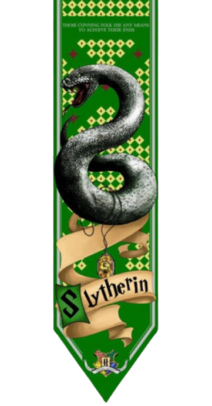
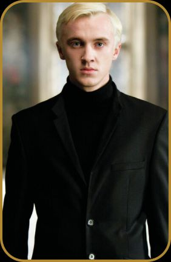
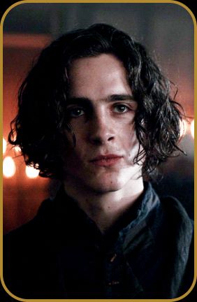
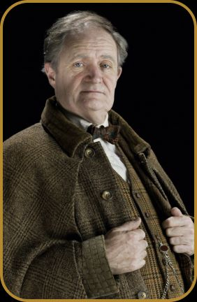

Sonserinos, é isso que somos;
não pediremos perdão.
Erguemos nossas cabeças.
Até usaremos nosso sangue.
Astúcia não nos falta.
Narizes empinandos

Salazar Sonserina acreditava que apenas os bruxos puros eram capazes de praticar a magia da maneira correta e, portanto, selecionava apenas os estudantes de sangue puro para sua casa. A fundação da Sonserina foi marcada por conflitos com os outros fundadores de Hogwarts, que eram contra a discriminação baseada em sangue.
O símbolo da Casa Sonserina é a cobra, um animal astuto e venenoso que representa a ambição e o poder. As cores da casa são o verde e a prata, que simbolizam a astúcia e a riqueza.

A sala comunal da Casa Sonserina está localizada nas masmorras de Hogwarts. É uma sala escura e luxuosa, com paredes de pedra e móveis elegantes. A sala possui várias características interessantes, como uma entrada escondida e uma lareira que nunca se apaga. Para entrar na sala comunal, os estudantes devem sussurrar uma senha para uma estátua de uma cobra que guarda a entrada.
Os estudantes da Casa Sonserina são conhecidos por serem ambiciosos, determinados e astutos. Eles são muitas vezes vistos como arrogantes e preconceituosos, já que a Casa Sonserina só aceita estudantes de sangue puro. Os membros da Casa são leais uns aos outros e acreditam na força da união para alcançar o poder. Eles também têm uma forte capacidade de liderança e são frequentemente encontrados em posições de poder em Hogwarts e na comunidade bruxa em geral.
Professor de Poções em Hogwarts, Snape foi um dos personagens mais controversos da série Harry Potter. Originalmente um aluno de Hogwarts na casa da Sonserina, ele se juntou a Voldemort antes de se tornar um espião para Dumbledore.
Draco é um dos personagens mais icônicos da série Harry Potter, ele é filho de um dos Comensais da Morte mais importantes, Lúcio Malfoy, e um estudante de Hogwarts da casa da Sonserina. Embora inicialmente cruel e arrogante, ele eventualmente mostrou sinais de bondade e redenção.
Regulus era irmão mais novo de Sirius Black e também um ex-aluno de Hogwarts da casa da Sonserina. Ele inicialmente apoiou Voldemort, mas acabou mudando de ideia e tentando destruir uma das Horcruxes de Voldemort antes de sua morte.
Slughorn era um professor de poções em Hogwarts e um membro da casa da Sonserina. Ele era conhecido por ser um colecionador de alunos talentosos e influentes, e também por sua relutância em ajudar Dumbledore em sua luta contra Voldemort. No entanto, ele eventualmente mudou de ideia e ajudou Harry Potter a derrotar o Lorde das Trevas.